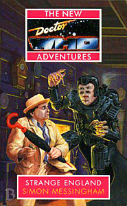

|
Strange England
|
BASIC PLOT DOCTOR COMPANIONS MATERIALISATION CIRCUIT Pg 7 A clearing in the woods by the house, just after Ted, the gamekeeper, has been eaten by a tree. Pg 192 The remains of Galah's TARDIS arrive in the house. Pg 230 On an asteroid in the Sol system. Pg 270 London, near the Houses of Parliament, 1873 (Pg 274). PREPARATORY READING CONTINUITY REFERENCES Pg 7 "The problem was, after three trips of rare tranquility, Ace was getting trigger-happy. The Moscow City Carnival of 2219 had been dangerous and fun." Presumably some time has passed since Blood Harvest. Pg 10 "Lemonade to drink and cucumber sandwiches to eat. A good solid game of village cricket." Black Orchid. Pg 11 "She had uncomfortable memories of another time and place that was totally unreal." If we're talking VR environments, then it could be about two in every three of the NAs thus far, but we're betting she's specifically referring to Conundrum here. Pg 13 "She prided herself on being the outdoors type and longed all of a sudden for the open space of Heaven." Love and War. Pg 14 "Despite their new-found bonds of friendship with each other..." In the wake of No Future. Pg 20 Reference to Cybermen. Pg 22 "He looked as if he was trying to put himself into one of those self-induced trances his species was capable of." Terror of the Zygons, amongst other references. Pg 34 "It reminded her of Bubbleshake." The Highest Science. Pg 43 As lots of people start to die: "Dinner is nearly ready, Doctor." How very Ghost Light. Pg 45 "You're not aliens disguised as humans are you? I've seen that one before." No Future. Pg 57 "You know, at first I thought it was a Timescoop again." The Five Doctors. And see Continuity Cock-Ups. Pg 60 Reference to Daleks. "Even cracking the ice on some sophisticated security system was better than an insect in the throat." Aside from this being a very odd turn of phrase, ice is a reference to hacking into computers, first mentioned in Cat's Cradle: Warhead. Pg 76 "This is as bad as the rations they dish out to the Auxies." With whom Ace spent three years, ending in Deceit. "'I'm from Perivale.' 'The village in Middlesex?'" Ghost Light. Pg 78 "'But they are clothes for men.' Ace grinned at him. 'Don't worry. I've done this before, too.'" Ghost Light. Pg 79 "He turned and looked. Ace was fast asleep in the chair." Ghost Light. Pg 90 "Abruptly, he picked up a pair of silver spoons and began playing them on his knee." Time and the Rani et al. Pg 97 "Strange to dream of Jo. Jo Grant. Little, fragile UNIT Jo." Terror of the Autons and thenceforth. Pg 98 "Sarah? But hadn't she been...?" Sarah Jane, from The Time Warrior and far too many others to mention. Pg 105 "'I heard a cry' 'That was me.'" The Robots of Death. Pg 158 "She felt the same disorientation she had experienced in the Land of Fiction." Conundrum. Pgs 168-169 "I knew those trapeze lessons with the Venusian State Circus would come in handy one day." Sounds very like what the Third Doctor used to say, without actually quoting him. Pg 181 "He even spotted a familiar looking ormolu." Like the clock in the TARDIS at the beginning of the Doctor's travels, all those years ago. Pg 182 "Have you never wondered that you might be making things worse? The more you interfere with the timelines, the more problems you set up further along the line." A reference to the Doctor being on a treadmill, which was one of the fundamental principles of the NAs, first alluded to in Deceit. Pg 202 "Of course, a TARDIS! It can construct any landscape it wants, can't it Doctor?" Cat's Cradle: Time's Crucible. Pg 233 "We were at the Academy together, a very long time ago." If the Time Lords had wanted to prevent interference in the universe by their own people, they really should have just timelooped everyone who was at the Academy with the Doctor. Pg 234 "You remember that time when the TARDIS went funny after the business with the Timewyrm?" The Timewyrm series, Cat's Cradle: Time's Crucible, Cat's Cradle: Witch Mark and a final resolution, of sorts, in Deceit. "You know, the ones I put on when I met Jared Khan." Birthright (which, incidentally, you will not find in the list of previous NAs at the back of this book). Pg 240 More references to linking with the TARDIS (Birthright) and the TARDIS being inside-out (Cat's Cradle: Time's Crucible). Pg 244 "She remembered the planet Lucifer and the problems they'd had there." Lucifer Rising. Pg 267 "I believed in a state of pure and absolute goodness in which no evil could exist." The Happiness Patrol, kind of. Pg 268 "Ashes to ashes." Remembrance of the Daleks. Pg 269 "Well old girl, once again we save the artificial universe as we know it." There was a lot of VR in the NAs, but this is the first time that it's specifically stated that the characters themselves have noticed. Pg 276 "The Doctor pulled three juggling balls from his pockets and threw them into the air." The Greatest Show in the Galaxy. OLD FRIENDS AND OLD ENEMIES NEW FRIENDS AND NEW ENEMIES Charlotte and Robert Aickland. Everyone else from the House winds up dead, or never existed in the first place. Actually, Charlotte didn't exist in the first place either. Bert and Madge Robbins. Everyone else from the real world winds up dead as well. Happy book, this one.
CONTINUITY COCK-UPS PLUGGING THE HOLES [Fan-wank theorizing of how to fix continuity cock-ups] FEATURED ALIEN RACES FEATURED LOCATIONS Pg 157 A flashback sequence to 1868 AD. Pg 229 An asteroid in the Sol system, 1873 AD. Pg 224 The House, where the bulk of the action takes place, transpires to be a TARDIS, where the Architectural Configuration system has got way, way too big for its boots. Pg 270 London, near the Houses of Parliament, 1873 (pg 274). IN SUMMARY - Anthony Wilson |
|
 |